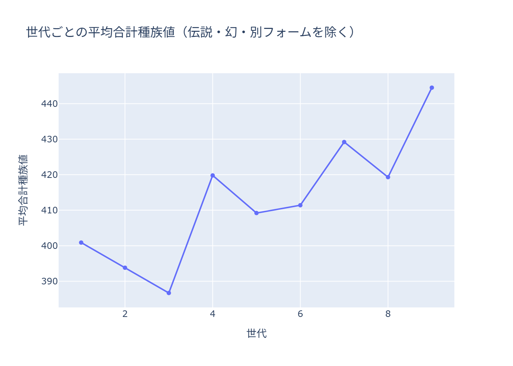
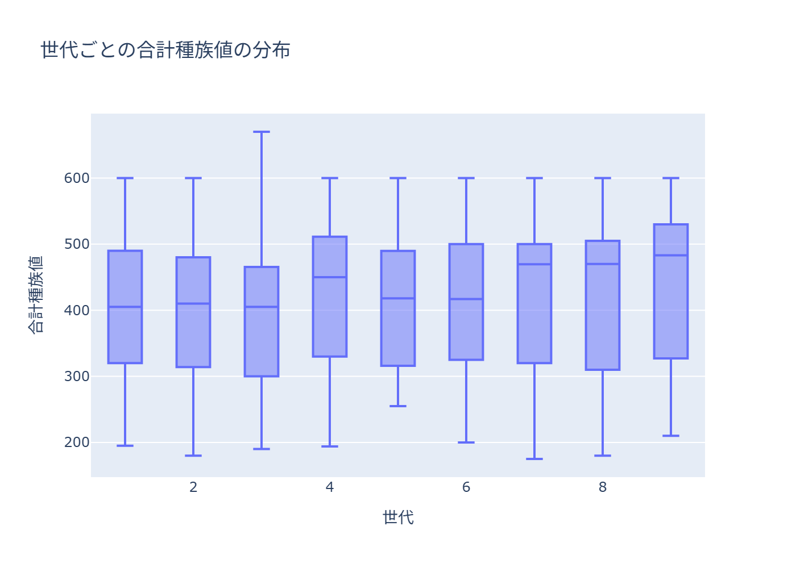

DATA 01
PokéAPIから世代ごとの種族値の合計の平均を比較する
PokéAPI から全ポケモンのデータを取得して SQLite に保存し、世代ごとの種族値の合計の平均を比べました。
全体の流れ
データがどこから来て、どこに保存され、どう見られるか。
-
STEP 1
取得
PokéAPI から全ポケモンのJSONを取得し、そのまま保存
-
STEP 2
加工
Python で、必要な項目を取り出して整える
-
STEP 3
保存
SQLite に登録
-
STEP 4
可視化
世代ごとの平均を、折れ線グラフと箱ひげ図で表示
背景と目的
まず、API からデータを取得する流れを、一通り経験したいと考えました。題材は、関心を持ち続けられるように、なじみのあるポケモンにしました。
設計のポイント
-
データの取り方
取得した JSON は、加工せずに、そのまま保存しました。後から、別の観点で加工し直せるようにするためです。
-
テーブルの設計
名前、日本語名、各種族値（6項目）、その合計を、登録しました。
-
定期実行と失敗したときの対応
今回は、1回だけ実行する作りで、定期実行や、失敗したときの自動対応は、入れていません。次回は、再実行しても、データが重複しないようにするなど、改善したいです。
できあがったもの


苦労したことと工夫
どんな題材にするか、かなり悩みました。AIにヒントをもらい、コードは、ほぼ AI に書いてもらいました。そのうえで、SQL は自分で書いて実行し、どんなデータが入っているかを、確かめました。
学んだことと、次にやりたいこと
生データをそのまま保存しておくと、後から加工をやり直せることを学びました。また、基本的な SQL だけでも、いろいろな集計ができることが分かりました。次は、タイプ別の件数や、タイプごとの種族値の比較をしたいです。画像認識にも挑戦してみたいです。